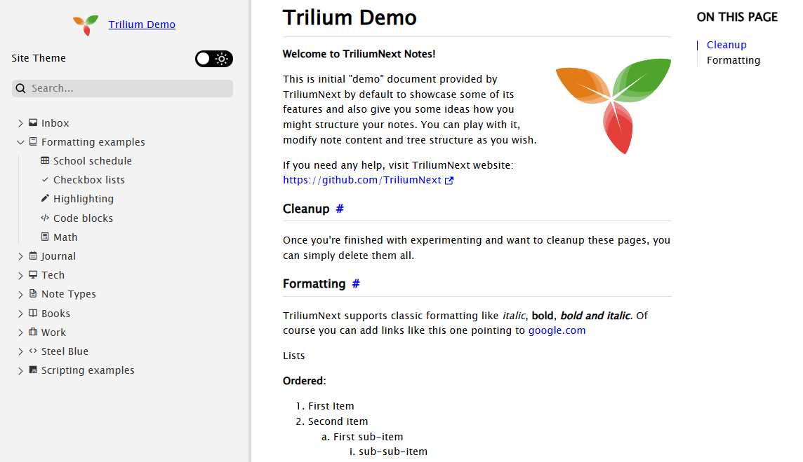
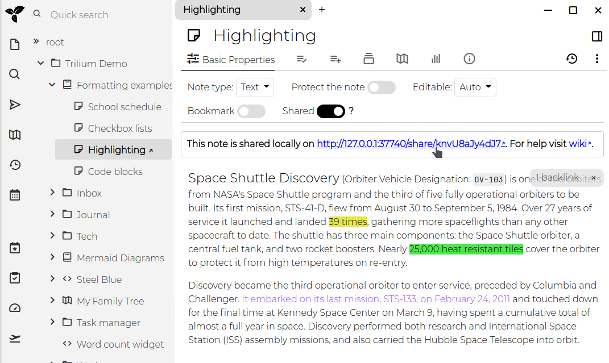

Trilium allows you to share selected notes as publicly accessible read-only documents. This feature is particularly useful for publishing content directly from your Trilium notes, making it accessible to others online.

#shareDescription), or, for a subpage
without text, links to its own first subpages. The cards can be hidden
with #hideChildrenOverview.| Supported features | Limitations | |
|---|---|---|
| Text |
|
|
| Code |
|
|
| Saved Search | Not supported. | |
| Relation Map | Not supported. | |
| Note Map | Not supported. | |
| Render Note | Not supported. | |
| Collections |
|
|
| Mermaid Diagrams |
|
|
| Canvas |
|
|
| Web View | Not supported. | |
| Mind Map | The diagram is displayed as a vector image. |
|
| Geo Map | Not supported. | |
| File | Basic interaction (downloading the file). |
|
While the sharing feature is powerful, it has some limitations:
Some of these limitations may be addressed in future updates.
To use the sharing feature, you must have a Server Installation of Trilium. This is necessary because the notes will be hosted from the server.
Enable Sharing: To share a note, toggle the Shared switch
within the note's interface. Once sharing is enabled, an URL will appear,
which you can click to access the shared note.

Access the Shared Note: The link provided will open the
note in your browser. If your server is not configured with a public IP,
the URL will refer to localhost (127.0.0.1).
When you share a note, you actually share the entire subtree of notes beneath it. If the note has child notes, they will also be included in the shared content. For example, sharing the "Formatting" subtree will display a page with basic navigation for exploring all the notes within that subtree.
You can view a list of all shared notes by clicking on "Show Shared Notes Subtree" in the Global menu. This allows you to manage and navigate through all the notes you have made public.
To protect shared notes with a username and password, you can use the #shareCredentials attribute.
Add this label to the note with the format #shareCredentials="username:password".
To protect an entire subtree, make sure the label is inheritable.
The default design should be a good starting point, but you can customize it using your own CSS:
~shareCss relation to the note. If you want this style
to apply to the entire subtree, make the label inheritable. You can hide
the CSS code note from the tree navigation by adding the #shareHiddenFromTree label.#shareOmitDefaultCss label to avoid conflicts with Trilium's default stylesheet.You can inject custom JavaScript into the shared note using the ~shareJs relation.
This allows you to access note attributes or traverse the note tree using
the fetchNote() API, which retrieves note data based on its
ID.
You can inject custom HTML snippets into specific locations of the shared
page using the ~shareHtml relation. The HTML note should contain
the raw HTML content you want to inject, and you can control where it appears
by adding the #shareHtmlLocation label to the HTML snippet note
itself.
The #shareHtmlLocation label accepts values in the format location:position:
head, body, content
start, end
For example:
#shareHtmlLocation=head:start - Injects HTML at the beginning
of the <head> section#shareHtmlLocation=head:end - Injects HTML at the end of the <head> section
(default)#shareHtmlLocation=body:start - Injects HTML at the beginning
of the <body> section#shareHtmlLocation=content:start - Injects HTML at the beginning
of the content area#shareHtmlLocation=content:end - Injects HTML at the end of
the content areaIf no location is specified, the HTML will be injected at content:end by
default.
Example:
const currentNote = await fetchNote();
const parentNote = await fetchNote(currentNote.parentNoteIds[0]);
for (const attr of parentNote.attributes) {
console.log(attr.type, attr.name, attr.value);
}To completely redesign the share, it is possible to create or use an existing custom share template.
Shared notes typically have URLs like http://domain.tld/share/knvU8aJy4dJ7,
where the last part is the note's ID. You can make these URLs more user-friendly
by adding the #shareAlias label to individual notes (e.g., #shareAlias=highlighting).
This will change the URL to http://domain.tld/share/highlighting.
Important:
/) within aliases to create subpaths is not
supported.To customize the favicon for your shared pages, create a relation ~shareFavicon pointing
to a file note containing the favicon (e.g., in .ico format).
You can designate a specific note or folder as the root of your shared
content by adding the #shareRoot label. This note will be linked
when visiting [http://domain.tld/share](http://domain/share),
making it easier to use Trilium as a fully-fledged website.
When accessing a share, the sub-notes will be displayed in a tree on the left. But since multiple note trees can be shared, it might be useful to display a list of all the different share trees.
To do so, create a shared text note and apply the shareIndex label.
When viewed, the list of shared roots will be displayed at the bottom of
the note.
Sometimes it's useful to include a link to an external website alongside
your shared notes — for example in the shared navigation or in an index.
To do so, add the #shareExternalLink label to a note, with the
target URL as its value (e.g. #shareExternalLink="https://example.com").
Any link pointing to this note will then redirect to the external website and open in a new browser tab, instead of opening the note's own shared page. This applies to:
#shareIndex label;The URL must be absolute and include the scheme (e.g. https://).
| Attribute | Description |
|---|---|
#shareHiddenFromTree
|
this note is hidden from the left navigation tree and from its parent's list of subpages, but still accessible with its URL |
#shareExternalLink
|
when a link points to this note (from the share index, a subpage list,
or an inline link in another shared note), it redirects to the given external
URL in a new tab instead of the note's shared page. Value is the absolute
URL, e.g. https://example.com. |
#shareAlias
|
define an alias using which the note will be available under https://your_trilium_host/share/[your_alias]
|
#shareOmitDefaultCss
|
default share page CSS will be omitted. Use when you make extensive styling changes. |
#shareRoot
|
marks note which is served on /share root. |
#shareDescription
|
define text to be added to the HTML meta tag for description. It also describes the note in the list of subpages of its parent, in place of the start of its text. |
#shareRaw
|
Note will be served in its raw format, without HTML wrapper. See also Serving directly the content of a note for an alternative method without setting an attribute. |
#shareDisallowRobotIndexing
|
Indicates to web crawlers that the page should not be indexed of this note by:
|
#shareCredentials
|
require credentials to access this shared note. Value is expected to be
in format username:password. Don't forget to make this inheritable
to apply to child-notes/images. |
#shareIndex
|
Note with this label will list all roots of shared notes. |
#shareHtmlLocation
|
defines where custom HTML injected via ~shareHtml relation
should be placed. Applied to the HTML snippet note itself. Format: location:position where
location is head, body, or content and
position is start or end. Defaults to content:end. |
It's possible to adjust the logo which is displayed above the navigation tree (in the header, on a narrow screen).
| Attribute | Description |
|---|---|
~shareLogo
|
Relation set to an image to use as logo. The image must be part of the share tree (it can be hidden if needed). Without it, the logo is the icon of the shared root note. |
#shareLogoWidth
|
The width of the logo, as a number without unit. With #shareLogoHeight,
it sets the proportions of the logo, which is shown 32 pixels wide. Default
is 53. |
#shareLogoHeight
|
The height of the logo, as a number without unit. With #shareLogoWidth,
it sets the proportions of the logo. Default is 40. |
#shareRootLink
|
URL to navigate to when the logo is pressed. |
A meta-property is left out of the page when its attribute is not set. Without an image, link previews use a small card.
| Attribute | Description |
|---|---|
#shareOpenGraphColor
|
This adjusts the theme-color meta-property. |
#shareOpenGraphURL
|
This adjusts the og:url and twitter:url meta-properties.
It is also the address a relative og:image is completed with,
so it should be the public address of the shared site, such as https://example.com/share/. |
#shareOpenGraphDomain
|
Adjusts the twitter:domain meta-property. |
#shareOpenGraphImage
~shareOpenGraphImage
|
Can be either a label with the address of an image, or a relation to an
image File.
This controls the og:image meta-property. Sites that show a
preview of the link load the image from their own servers, so a relative
address, which the relation always gives, is completed with #shareOpenGraphURL;
without it, the image does not show in such previews. |
Since v0.95.0, a new theme was introduced (and enabled by default) which greatly improves the visual aspect of the Share feature, as well as its functionality (such as mobile support, dark/light mode, collapsible tree, etc.). This theme is an adaptation of the Trilium Rocks! by zerebos.